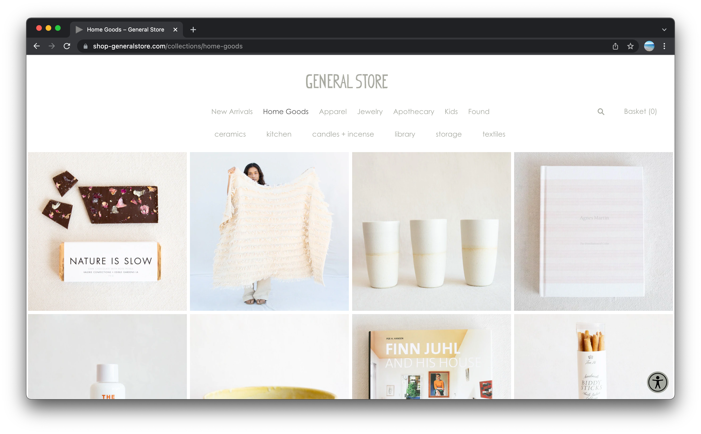
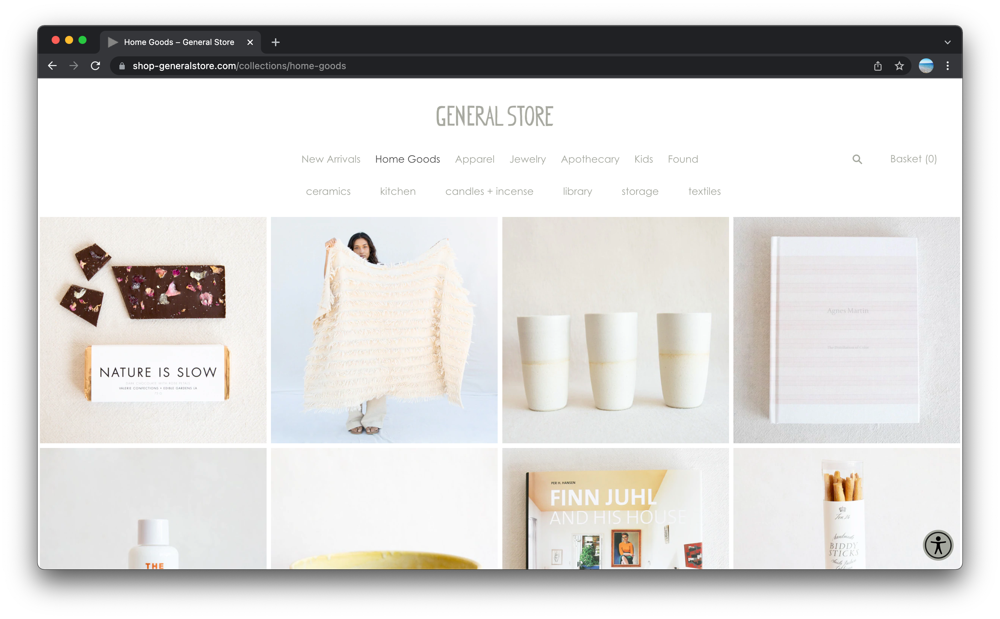
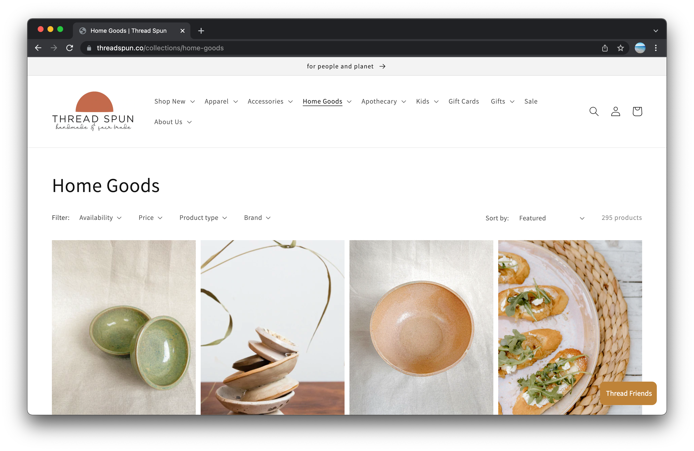
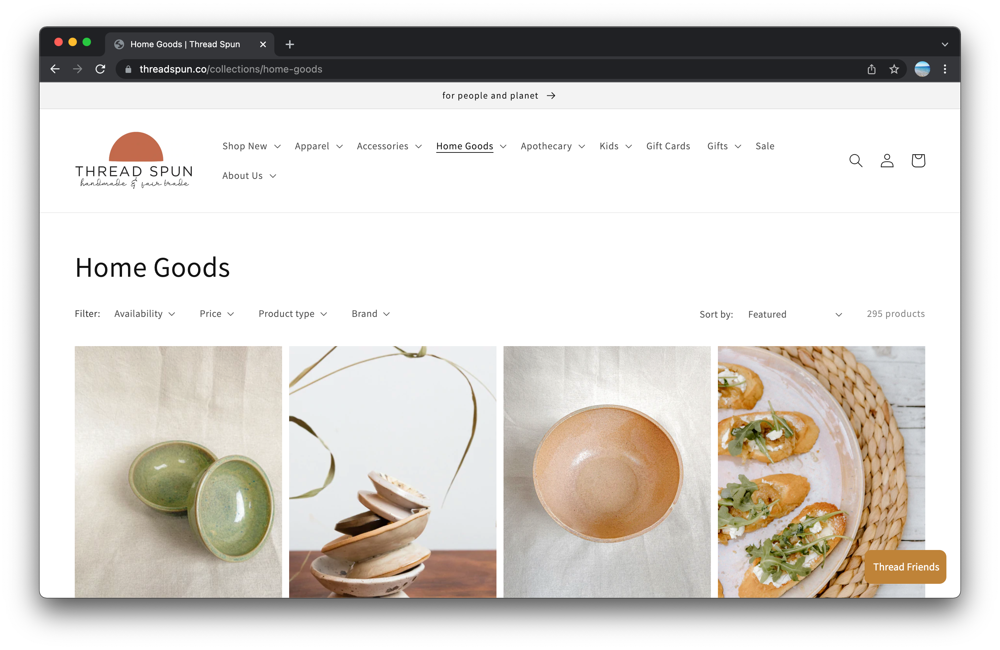
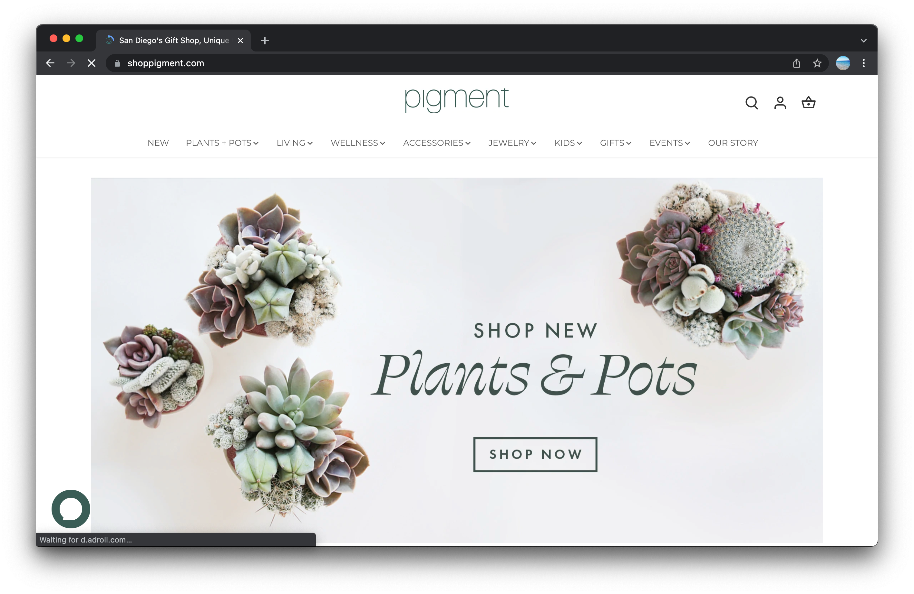
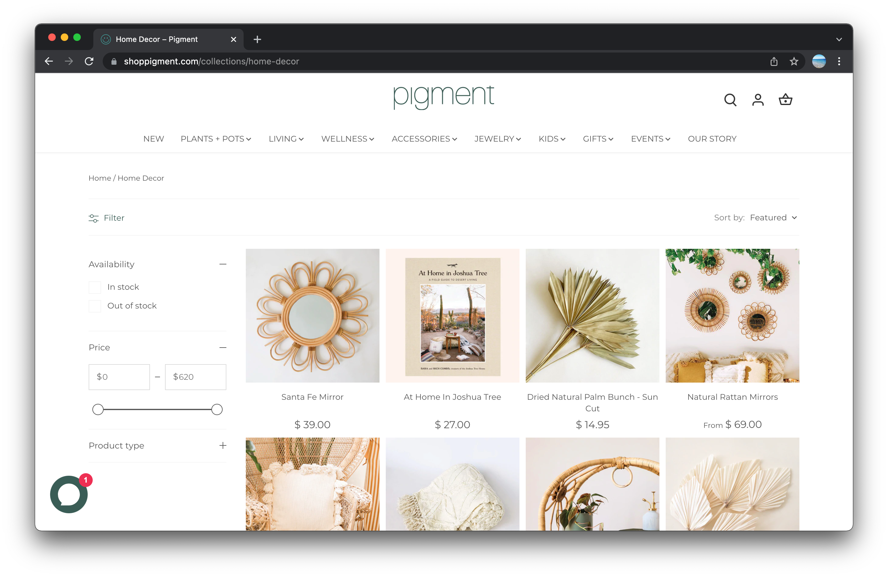

Final project proposal
Introduction
Curated SLO
Curated SLO is a woman-owned and operated shop located in downton San Luis Obispo, California. Curated SLO offers a selectation of local sustainably-produced gifts, apparel, home goods, and much more. We are proud to partner with small independent brands that produce ethical and unique products that are made to last.
Target audience
The target audience of Curated SLO are those who prioritize a more sustainable lifestlye. Since we offer a variety of locally sourced goods, our customer are those who value supporting small businesses and artists.
Our target audience's goal is to follow a more conscious lifestyle. Our website will allow current or new customers to shop or find out more about our company before coming in store.
Comparative analysis
The General Store
 

Thread Spun
 

Pigment
 Website content
Home
[logo]
Welcome to Curated SLO!
[image of shop inside]
Shop
[image of honey]
Happy Organics Honey
$15
[image of vase]
Handmade Ceramic Vase
$30
[image of bags]
Reusable Produce Bag Bundle
$20
[image of earrings]
Amanda Hunt Hoop Earrings
$95
[image of dish]
Ceramic Trinket Dish
$12
[image of sunglasses]
Sunski Polarized Sunglasses
$58
[image of scrub]
Sea Salt Scrub
$15
[image of calendar]
Postalco One Year Wall Calendar
$25
About
Hello there! Curated SLO is a woman-owned and operated shop located in downton San Luis Obispo, California. Curated SLO offers a selectation of local sustainably-produced gifts, apparel, home goods, and much more. We are proud to partner with small independent brands that produce ethical and unique products that are made to last.
[image of owners/staff]
Contact
Visit Us! 1035 Chorro St, San Luis Obispo, CA 93401.
Open Monday through Friday 11-5 and Weekends 10-7
Contact us at info@curatedslo.com or (805)-287-2833
[view of the storefront]